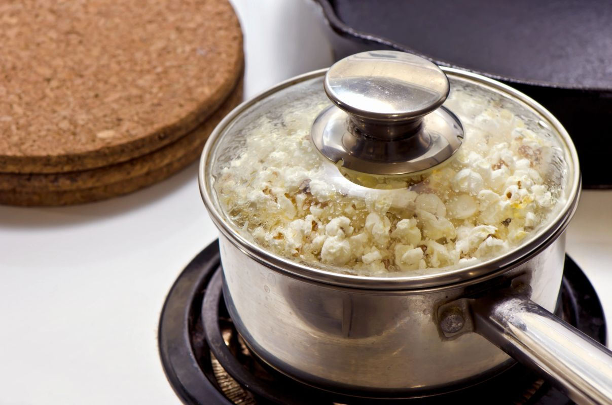

Preheat the oil
Pour one part oil into the pan, enough to cover the bottom. Preheat it over a medium-low flame until the oil thins out and shimmers across the surface.
Hands down, the best way to cook popcorn kernels is in a pan. A little oil, three parts corn, and one good shake of our buttery salt at the end.

You want the oil hot enough to pop the corn without ever reaching its smoke point. Many people find coconut oil to be a great, healthy option — it gives the popcorn that cinema-gold color and a faint sweetness of its own.
From cold pan to seasoned bowl in about five minutes.
Pour one part oil into the pan, enough to cover the bottom. Preheat it over a medium-low flame until the oil thins out and shimmers across the surface.
Tip in three parts popcorn — more or less to suit individual taste — and lower the heat slightly so the kernels pop evenly instead of scorching.
Agitate the pan until the popcorn ceases to pop. Pour it straight into a bowl and hit it with our Buttery Salt and any of our savory seasonings while it's still hot.
Popcorn cools fast, and so does its ability to hold flavor. Salt first, then layer your seasoning, tossing between each shake.
The base layer for everything else. The heat and the light film of oil on the corn are what make it stick.
Hickory Smoke BBQ for smoky, White Cheddar for rich, Ranch for herby — start light, toss, taste, repeat.
Popcorn is at its crunchiest in the first few minutes. Toss it in a wide bowl so every piece gets its share.
Absolutely. Our kernels pop beautifully in stovetop-style machines and air poppers — just hold off on the seasoning until the corn is out and still warm, then season in a large bowl where you can toss it.
One part oil to three parts popcorn. The oil only needs to coat the bottom of the pan — you are not deep frying, you are priming the pan.
The corn has cooled. Season within a minute of the popping stopping, layering the salt first and your seasoning second, tossing between the two.
It depends on the shape you're after: mushroom kernels pop into round balls that hold coating without crumbling, while white hulless varieties give a softer, more delicate piece. See the kernel facts page for the full line-up.
Kernels, buttery salt, five seasonings and the signed gift packages. Order them today.